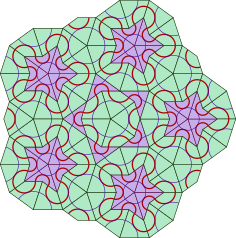

Page content
Page content
Page content
This section describes documentation source text writing and covers such topics as Markdown syntax, formatting examples and tricks. The templates and styling question, as well as the documentation structuring, are discussed in the other sections.
The complete Markdown guide is not provided in this section, so see the original syntax description for more details.
This documentation is written solely using the M2H program and itself demonstrates the possible result that may be obtained. The source Markdown text files may be viewed using the "Source text" link ("</>") in the page title block.
| Text effect | Markdown/HTML syntax | Comments |
|---|---|---|
| bold | __bold__ or **bold** |
|
| italic | _italic_ or *italic* |
|
in-line <code> fragment |
`in-line <code> fragment` |
|
| escaped <code> fragment | <span class="code">escaped <code> fragment</span> |
1 |
<del>deleted</del> |
2 | |
| inserted | <ins>inserted</ins> |
2 |
| Normal textsubscript | Normal text<sub>subscript</sub> |
3 |
| Normal textsuperscript | Normal text<sup>superscript</sup> |
3 |
— (em-dash, —) |
--- |
Comments
code
was defined, so direct HTML inclusions may be a suitable workaround.++inserted++) and deleted (~~deleted~~)
text is not implemented in this program. First, these effects must not be required very
often. Second, such markup may cause problems if we write text like "C++", or ++i.
The used direct HTML markup lets achieve these effects safely.Horizontal line (<hr />) may be inserted by placing several dashes (----).
A paragraph (<p>) is inserted by an empty line.
A line break (<br />) may be inserted by leaving more than two spaces at the end of line
(as it's done in the previous line).
Headers are inserted using one to six pound symbols (#) at the beginning of line. This
makes headers from <h1> to <h6> respectively. Other ways are described
here.
Dashes and equal signs may be interpreted as header marks of the previous line, so to avoid this markup it's better, and sometimes required, to leave an empty line before these sequences.
[TOC] element in the Markdown document will resolve into the document's table of contents in
the generated HTML. The example can be seen at the top of this and other pages. The ToC is
composed of the headers found on the page.
Note
Unfortunately by now there's no way to insert a local ToC, i.e. a ToC for a certain header that would contain only the sub-headers of this header.
Note
The Python and the Java versions give slightly different ToC appearance. The Java version
preserves the header text formatting while the Python version removes this formatting. So
if a header contains e.g. an inline code block the Python version will reflect this
code block as unformatted text in the corresponding ToC item.
The link syntax is:
[link text](path/to/doc.html "title")where "title" is not required. If link text is omitted the link will be not visible.
There's the other syntax:
<path/to/doc.html>that will make the link text equal the link location.
The header tags have their automatically generated ids so they can be referenced by the links.
But these ids are uncontrolled and will change if the the header changes. Anchors may be added
at the arbitrary places on the page with the syntax:
<a name="anchor_name"></a>id attribute instead of name attribute will also work. Then this anchor may be referenced as:
[link text](#anchor_name)from the same page, or:
[link text](this_page.html#anchor_name)from the same or the other page.

A picture is inserted the following ways:
 — the simplest form; — with optional alternative text and hint;In this example the other method is used that allows placing images on the page side with the text floating around, that may be very useful with small images. This method uses direct HTML inclusion:
Important
The image tag is enclosed by a paragraph that is required for the currently used styles. The Python version does this enclosing itself, but the Java version does not. Though the Python version does not do extra enclosing if it's already done. So it's better to always add the paragraph.
Note
This example also uses a path substitution <!--path pict-->.
See "relative-paths" plugin for more details.
To stop the text float the following empty paragraph may be used:
<p style="clear: both;"></p>An image may be used as a link text like this:
[](page.html)Then we will get a clickable image that works as a link:
The following markup:
1. This is a __first-level__ _ordered_ list item.
Another paragraph may be added by adding one empty line above and indenting by 4 spaces.
> Other elements, like `<blockquote>`, may be included into a list item.
- This is a __second-level__ _unordered_ list sub-item. The long lines may be wrapped
with extra 4 space indent without an empty line above.
3. This is a __third-level__ _ordered_ list sub-item. Any numbers may be used as
_ordered_ list item markers.
3. This is another __third-level__ _ordered_ list sub-item.
- This is another __second-level__ _unordered_ list sub-item.
1. This is another __first-level__ _unordered_ list item. Though `1.` is used as the
item number this item marker will be "2.".gives the following output:
This is a first-level ordered list item.
Another paragraph may be added by adding one empty line above and indenting by 4 spaces.
Other elements, like
<blockquote>, may be included into a list item.
This is another first-level ordered list item. Though 1. is used as the
item number this item marker will be "2.".
Blockquotes are inserted by starting each line with >.
Links, images and some other Markdown elements may be used inside
blockquotes:
Table are added with the syntax like this:
Item No | Name | Description | Price
:------:|-------|---------------|------:
1 | Chair | Kitchen chair | 87.50
2 | Table | Kitchen table | 450.00
3 | Lamp | Standard lamp | 120.75Currently used styles define the following default table appearance:
| Item No | Name | Description | Price |
|---|---|---|---|
| 1 | Chair | Kitchen chair | 87.50 |
| 2 | Table | Kitchen table | 450.00 |
| 3 | Lamp | Standard lamp | 120.75 |
Markdown doesn't have syntax for different table styles, but some trick may be used to achieve
this. We can add an invisible element (an empty <div> in this case) right before the
table and then define the appearance using some simple CSS magic. So the following invisible
element right before a table:
<div class="tableLight"></div>Will give the following table style:
| Item No | Name | Description | Price |
|---|---|---|---|
| 1 | Chair | Kitchen chair | 87.50 |
| 2 | Table | Kitchen table | 450.00 |
| 3 | Lamp | Standard lamp | 120.75 |
If we want to just align text we can use a table without a header:
<div class="tableHederless"></div>
| | | | |
|---:|---: |---: |---: |
| 10 | 20 | 30 | 40 |
| 50 | 60 | 70 | 80 |
| 90 | 100 | 110 | 120 |This will give:
| 10 | 20 | 30 | 40 |
| 50 | 60 | 70 | 80 |
| 90 | 100 | 110 | 120 |
We also can combine the CSS classes like this:
<div class="tableLight tableHederless"></div>| 10 | 20 | 30 | 40 |
| 50 | 60 | 70 | 80 |
| 90 | 100 | 110 | 120 |
Fenced code blocks may be set up by four-space indent, or by four backticks (````), i.e.
the following markup:
````
Example of
preformatted
text
````
will look like:
Example of
preformatted
text
This type of block visually correlates with inline code fragments.
Style may be specified the following way:
````text
This is a light code block example.
It is also preformatted
but has no background.
````
The result will be:
This is a light code block example.
It is also preformatted
but has no background.There are also shell code block (marked as shell):
$ echo "This block demonstrates operations in a shell"
This block demonstrates operations in a shelland program language code block (marked as code):
System.out.println("This block demonstrates " +
"a source code in a program language.");Note
Program language source code syntax highlighting is not implemented yet.
Fenced blocks may be inserted inside other blocks like
blockquotes:$ echo Fenced blocks inside a blockquote Fenced blocks inside a blockquoteAlso, for instance, lists inside
blockquotes may contain fenced code blocks:
- Item 1:
Fenced block, line 1 Fenced block, line 2- Item 2
Sometimes it's required to have long lines inside code blocks wrapped, but the above code
blocks don't wrap the lines automatically. Of cause we can break the lines manually but this
may make the content inconvenient for copy-pasting. To address this cases, additional markers
wrapped, wrapped-code and wrapped-shell were defined. Here's an example:
This is a long line that doesn't contain line breaks inside itself and that we want to be automatically wrapped so that the fenced code block doesn't exceed the page width.The following code may be used in order to avoid plugin substitutions:
<div class="code"></div>The result will be like this:
Info
Admonitions are specially formatted blocks whose purpose is drawing attention to some pieces of information. To add such a block the following syntax is used:
!!! qualifier "Optional title"
block content
with 4 space indent on each lineNote
There are defined the following qualifiers:
note;tip, hint, important;danger, error;warning, attention, caution.Important
Other qualifiers may be used (like info qualifier above). CSS need to be edited to
add special formatting for this admonitions, otherwise the default formatting is used.
Don't overuse!
This highlighting method should not be overused. If there are a lot of such blocks then important information may be easily missed by the reader.
BTW, in this block a custom title is used.
To place an admonition without a header empty quotes may be set as the title:
!!! hint ""
This admonition will not have a title.Danger
Admonitions are not supported in GitHub and StackOverflow.
Note
When a default title is used its first character is capitalized.